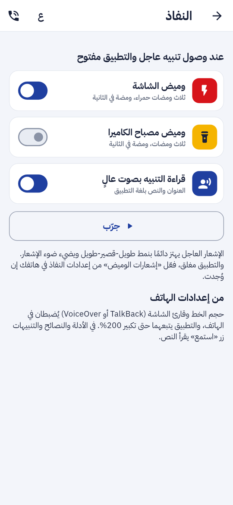
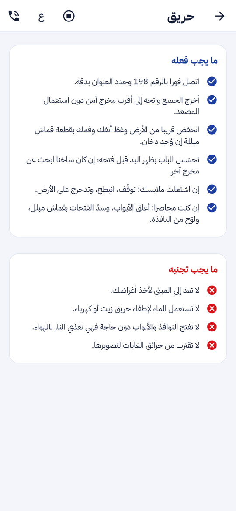
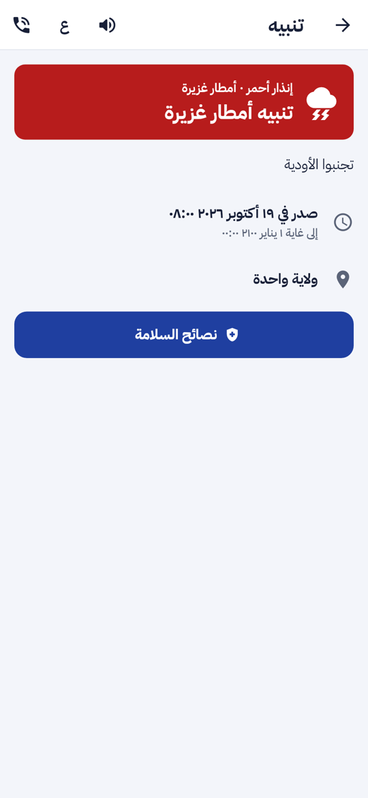
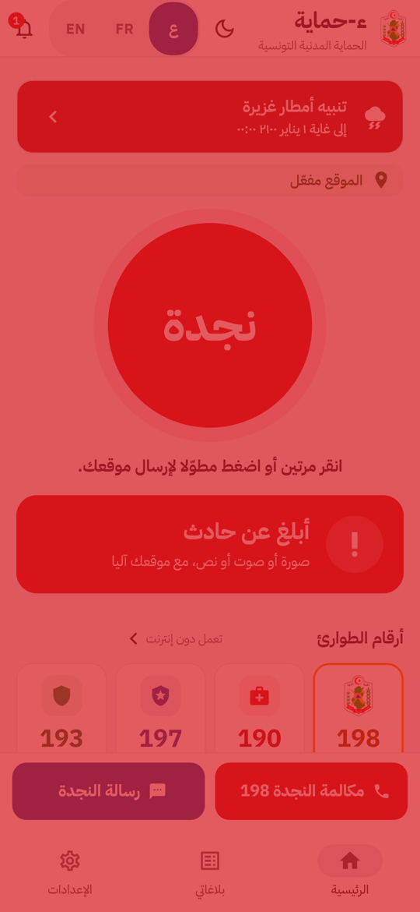

ء-حماية e-Himaya
تقرير المرحلة P5a: القراءة الصوتية والوميض في تطبيق الهاتف (بقية متطلب النفاذ). زر «استمع» في الأدلة والنصائح والتنبيهات، ووميض الشاشة ومصباح الكاميرا والقراءة الآلية عند وصول تنبيه عاجل
1. أين تقع هذه المرحلة من مسار المشروع
التبليغ
←
المعالجة
←
التحليل
←
مؤشرات الأداء KPI
←
التنبؤ بالذكاء الاصطناعي
←
اتخاذ القرار
- التبليغ: ضعيف البصر يسمع تعليمات الإسعاف والنصائح دون أن يقرأها.
- اتخاذ القرار: التنبيه الذي يصدره الديوان يصل إلى ضعيف السمع بالوميض أيضا، لا بالصوت وحده.
2. مراجعة ← تصميم ← تطوير
ما وجدته: البلاغ النصي ورسالة SMS الجاهزة إلى 198 موجودان، والإشعار العاجل يهتز بنمط خاص (طويل-قصير-طويل) ويضيء ضوء الإشعار. الناقص: لا قراءة صوتية، ولا وميض في الهواتف التي بلا ضوء إشعار، وهي معظم الهواتف الحديثة.
- زر «استمع» في بطاقة الدليل والنصيحة والتنبيه، وفي شاشة التنبيه فوق الهاتف المقفل. يقرأ النص بترتيب الصفحة بصوت الهاتف نفسه: لا يُرسل أي نص إلى أي خدمة. للعربية يُجرَّب الصوت التونسي ثم العربي العام. إن لم يوجد صوت يشرح التطبيق كيف يُثبَّت. الخروج من الصفحة يوقف القراءة.
- شاشة «النفاذ» في الإعدادات بثلاثة اختيارات معطّلة افتراضيا، وكلها تعمل عند وصول تنبيه عاجل والتطبيق مفتوح:
- وميض الشاشة: ثلاث نبضات حمراء، نبضة في الثانية. معيار WCAG 2.3.1 يسمح بثلاث في الثانية كحد أقصى، والغطاء لا يأخذ اللمس ولا يقرؤه قارئ الشاشة.
- وميض مصباح الكاميرا: ثلاث ومضات. المفتاح معطّل في هاتف بلا مصباح.
- قراءة التنبيه بصوت عالٍ: العنوان والنص.
وزر «جرّب» يشغّل ما اختاره المستعمل بنص «لا يوجد أي خطر».
- خارج التطبيق: الشاشة تدلّ على «إشعارات الوميض» في إعدادات الهاتف (أندرويد 14 و iOS)، بدل خدمة دائمة تستهلك البطارية.
3. لقطات
شاشة «النفاذ»، والنصيحة أثناء القراءة (الزر صار «إيقاف»)، والتنبيه بزر «استمع»، والرئيسية لحظة الوميض:




4. التقدم لكل جزء
| بند النفاذ | الحالة | التقدم |
|---|
| قراءة صوتية للأدلة والنصائح والتنبيهات | منجز (P5a) |
|
| وميض لضعاف السمع (الشاشة والمصباح) | منجز (P5a) |
|
| اهتزاز خاص بالتنبيهات الرسمية | موجود |
|
| بلاغ نصي ورسالة SMS إلى 198 | موجود (FR-A-048) |
|
| قارئ الشاشة، تكبير 200%، أهداف اللمس، التباين | منجز (P3c) |
|
| تجربة TalkBack و VoiceOver يدوية | تحتاج هواتف حقيقية |
|
تقدم P5a: 100%. متطلب النفاذ منجز آلياً، وتبقى التجربة اليدوية.
5. المحاكاة [SIM]
- [SIM] التنبيه والنصائح في اللقطات بيانات اختبار؛ الصوت والمصباح في الاختبارات مزيّفان يسجّلان ما طُلب منهما.
6. الاختبارات المطبقة
| المكوّن | العدد | النتيجة |
|---|
| تطبيق الهاتف (flutter test) | 524، منها 6 مسارات جديدة للقراءة والوميض و3 حالات نفاذ لشاشة «النفاذ» | كلها ناجحة |
flutter analyze | — | لا ملاحظة |
المسارات في apps/mobile/test/widgets/read_aloud_flow_test.dart:
- القراءة بلغة التطبيق، ثم التوقف بالزر أو حين ينتهي المحرك.
- لا صوت للّغة.
- قراءة التنبيه، وتوقفها عند الخروج من الصفحة.
- شاشة النفاذ والتجربة، ووميض لثلاث ثوان ثم يختفي.
- هاتف بلا مصباح.
- إشعار عادي لا يحرّك شيئا، وتنبيه عاجل يحرّك ما اختير فقط.
بناء APK يجري في CI.
8. المخرجات المحيَّنة
- الملف الوصفي V10 (docx و pdf) في
spec/: المتطلب الجديد F-APP-145 منجز، وحالة متطلب النفاذ، و524 اختبارا، وخارطة الطريق.
- مخططات UML في
diagrams/: مخطط تسلسل جديد «التنبيه العاجل للصم وضعاف البصر» (45).
- العرض للمسؤولين: 25 مرحلة، والخطوة الأولى «تجربة النفاذ» مع جمعيات ذوي الإعاقة، في
presentation/.
- مرجع التصميم مُعاد توليده بالأيقونات الجديدة: design-reference.html.
- جدول التتبع وسجل الإصدارات والبند P5.
9. ملاحظات وانحرافات
- الوميض والقراءة الآلية يعملان والتطبيق مفتوح فقط. خارجه يكفي الاهتزاز وضوء الإشعار و«إشعارات الوميض» في الهاتف، فلا خدمة دائمة تستهلك البطارية (NFR-16).
- جودة القراءة العربية تتبع صوت الهاتف. محرك Google فيه صوت عربي يُنزَّل مرة واحدة، والتطبيق يرشد إليه إن لم يجده.
- التنبيه المحجوب (المحتوى الشخصي) لا يُقرأ قبل أن يجلبه التطبيق بهوية المستعمل.
10. ما يلي
تجربة النفاذ اليدوية مع جمعيات ذوي الإعاقة على هواتف حقيقية، ثم تطبيق الأعوان والتقارير الميدانية حسب خارطة الطريق.